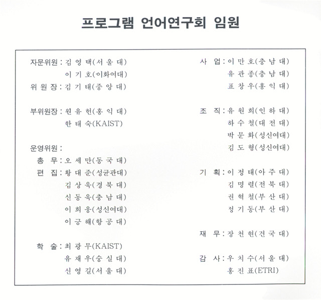
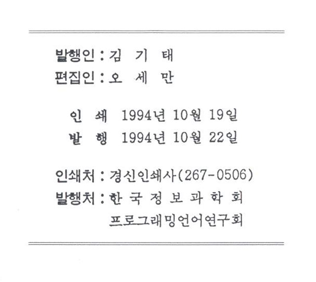

프로그래밍언어연구회지 제8권 제2호 (1994년 10월)
논문
- 코드 스케쥴링과 레지스터 할당의 병행처리
한정현, 표창우, 원유헌 (홍익대학교)
- Tree Pattern Matching을 이용한 핍홀 최적화기의 설계 및 구현
김정숙, 고광만, 김성철, 한용희, 오세만 (동국대학교)
- Visual Reasoning에 의한 하이퍼미디어 정보 검색
김상욱, 윤일지 (경북대학교)
- 단일 방향 내포 병렬 루프 프로그램의 효과적인 접근 이상 탐지
천병구, 김동국, 전용기 (경상대학교)
- 상속성을 갖는 객체지향 프로그램 생성을 위한 변환기
안유정, 이기호 (이화여자대학교)
- C++ 어휘 분석기와 구문 분석기의 설계 및 구현
김정훈, 김태훈, 장천현 (건국대학교)
- 병렬 프로그램의 접근 이상을 감지하기 위한 순차적 그래픽 감시 도구
옥순호, 배재권, 전용기 (경상대학교)
- 객체 기반 병행 언어 ABCL을 위한 분산 객체 관리기의 설계
정낙주, 신동욱 (충남대학교)


프로그래밍언어 연구회